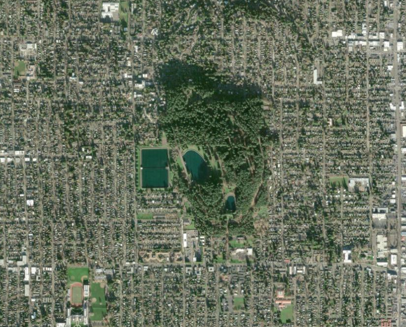

Project Overview
This project evaluated smartphone GPS accuracy under varying environmental conditions at Mt. Tabor Park in Portland, Oregon. The study examined how surrounding landscape characteristics, including vegetation and sky visibility, influenced positional accuracy.

Research Question
How does the surrounding environmental context influence smartphone GPS positional accuracy?
Data Collection
Field data were collected at Mt. Tabor across areas with different environmental conditions. Observations included positional accuracy and environmental characteristics such as canopy coverage and sky visibility.
The project used ArcGIS Field Maps and ArcGIS Online to collect and organize spatial observations, which were then analyzed using ArcGIS Pro.
Analysis
The collected observations were compared across environmental conditions to examine patterns in positional uncertainty. Open environments with greater sky visibility were compared with areas characterized by mixed and dense vegetation.
Key Takeaways
- Open environments with unobstructed views of the sky generally produced the most accurate positional results.
- Dense tree canopy corresponded with greater positional uncertainty.
- An external Bad Elf GPS receiver produced better average positional accuracy, although technical difficulties limited the number of comparison observations collected.
Interactive Project
Explore the full StoryMap
The complete project includes the study design, field observations, maps, analysis, and project conclusions.
View Interactive StoryMap →